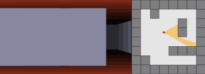

Wolfenstein es considerado uno de los pioneros de los videojuegos de disparos en primera persona (FPS).
Fue lanzado en mayo de 1992 por id Software que venía de trabajar en Hovertank 3D (1991) y Catacomb 3-D (1991), dos títulos que ya experimentaban con gráficos en 3D rudimentarios.
Sin embargo, Wolfenstein 3D fue un salto cualitativo gracias a la visión de John Carmack,
quien quería un juego rápido, inmersivo y accesible para las PCs de la época, que principalmente implementaban procesadores 286 y 386.
Para ello, se utilizó el "ray casting" como el método de renderizado del juego.
El ray casting es una técnica para crear proyecciones 3D basados en un plano 2D, que es un array de unos y ceros,
donde los unos son paredes y los ceros son espacios vacíos.
Se guarda el campo de vision del jugador, su posicion en ese array, y su direccion de desplazamiento.
Para cada ciclo del programa, se 'lanzan rayos' desde el campo de vision del jugador en su direccion,
y se espera a que cada rayo colisione con una pared (cualquier 1 del array).
Se guarda la longitud de cada rayo y en base a eso, se renderizarán las paredes de una manera u otra
generando una impresión de profundidad.

Hay un tutorial en youtube del usuario "javidx9" que muestra en mayor detalle el funcionamiento
del ray casting, desarrollando un juego ascii para terminal.
Haz click aqui para visitar su video.